Junior Caminero

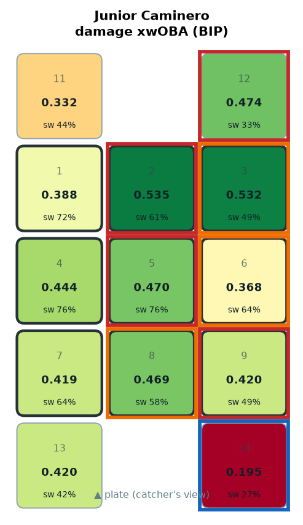
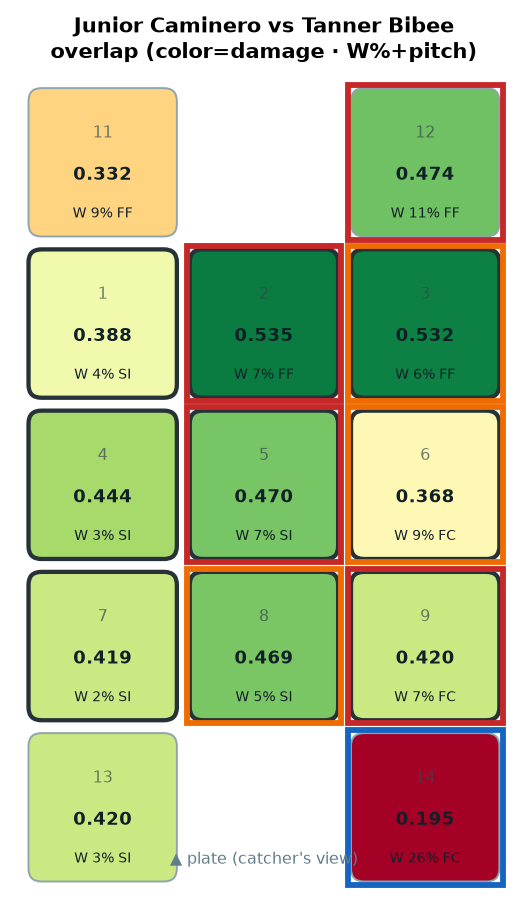
COLD OUT-DN-1B ← mainly FC (W 26.4%) · HOT OUT-UP-1B ← mainly FF (W 10.6%) · HOT HI-MID ← mainly FF (W 6.6%) · HOT HEART ← mainly SI (W 7.4%)
COLD OUT-DN-1B · HOT OUT-UP-1B · HOT HI-MID · HOT HEART
Yandy Díaz
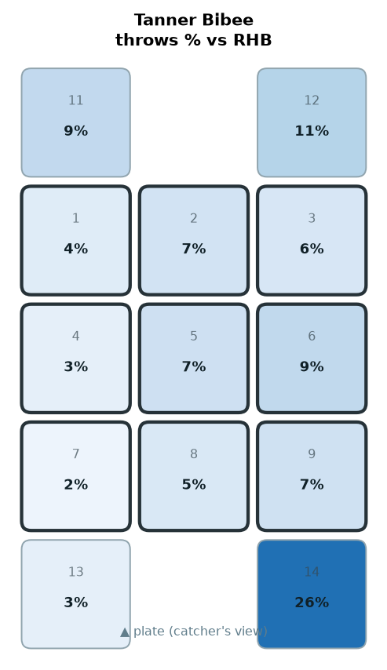
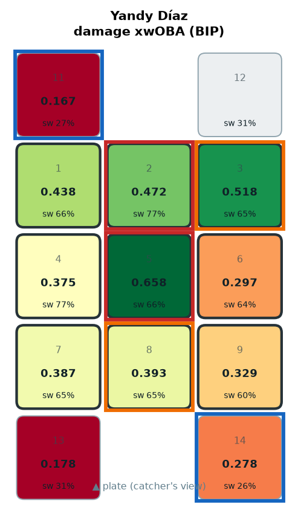
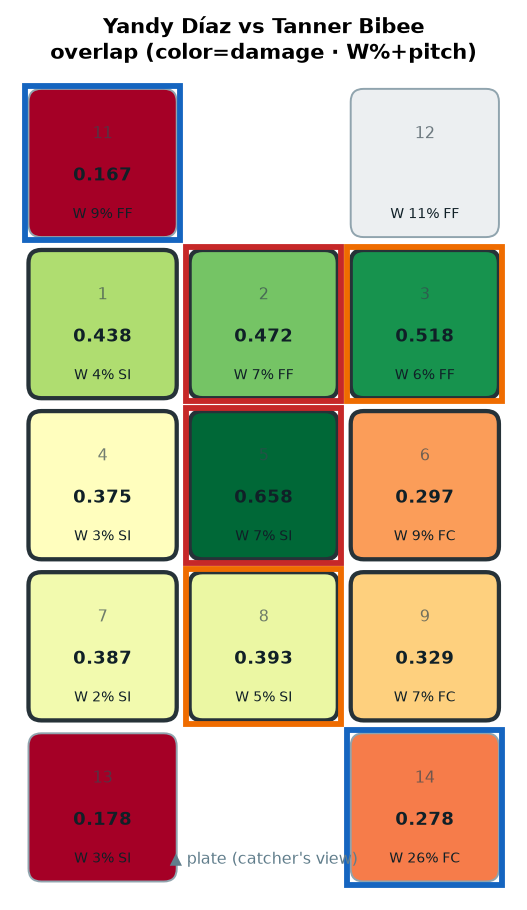
COLD OUT-DN-1B ← mainly FC (W 26.4%) · HOT HEART ← mainly SI (W 7.4%) · HOT HI-MID ← mainly FF (W 6.6%) · COLD OUT-UP-3B ← mainly FF (W 9.2%)
COLD OUT-DN-1B · HOT HEART · HOT HI-MID · COLD OUT-UP-3B
Jonathan Aranda

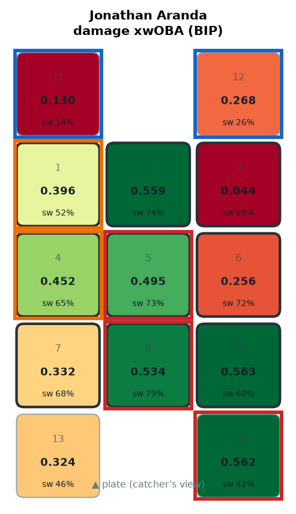
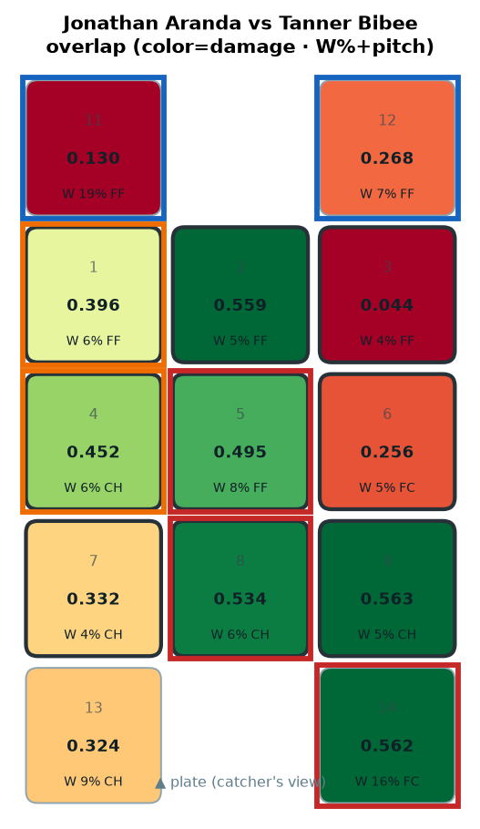
HOT OUT-DN-1B ← mainly FC (W 15.5%) · HOT HEART ← mainly FF (W 8.1%) · HOT LO-MID ← mainly CH (W 6.1%) · COLD OUT-UP-1B ← mainly FF (W 7.4%)
HOT OUT-DN-1B · HOT HEART · HOT LO-MID · COLD OUT-UP-1B
Liam Hicks

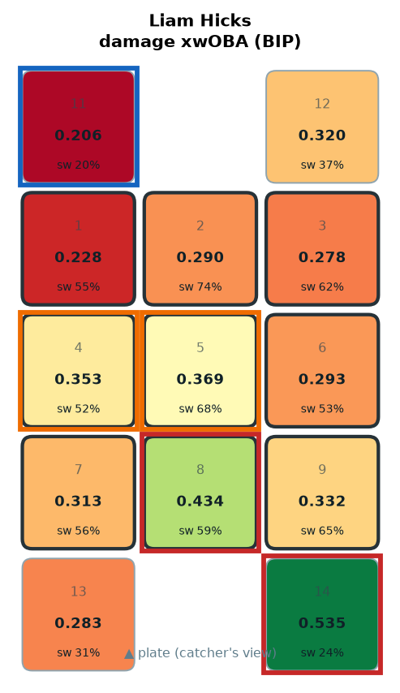
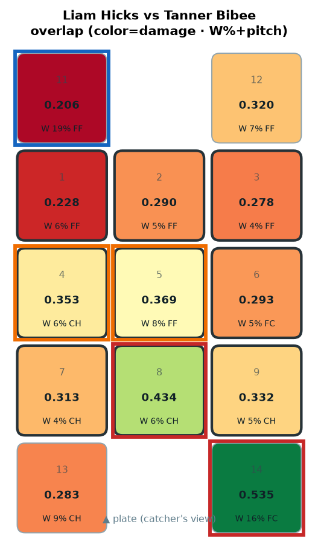
HOT OUT-DN-1B ← mainly FC (W 15.5%) · COLD OUT-UP-3B ← mainly FF (W 19.4%) · HOT LO-MID ← mainly CH (W 6.1%)
HOT OUT-DN-1B · COLD OUT-UP-3B · HOT LO-MID
Victor Mesa Jr.

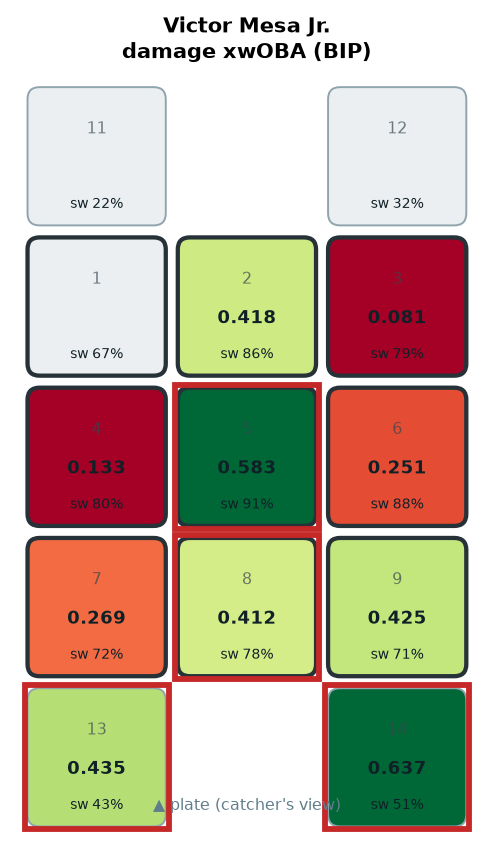
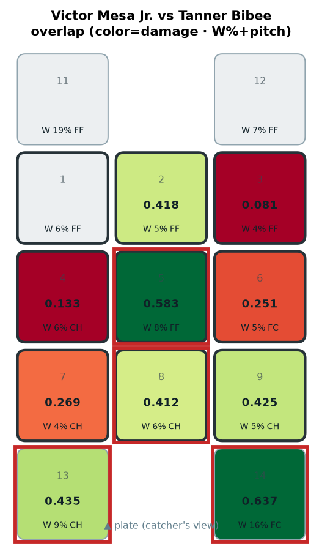
HOT OUT-DN-1B ← mainly FC (W 15.5%) · HOT HEART ← mainly FF (W 8.1%) · HOT OUT-DN-3B ← mainly CH (W 9.4%) · HOT LO-MID ← mainly CH (W 6.1%)
HOT OUT-DN-1B · HOT HEART · HOT OUT-DN-3B · HOT LO-MID
Chandler Simpson
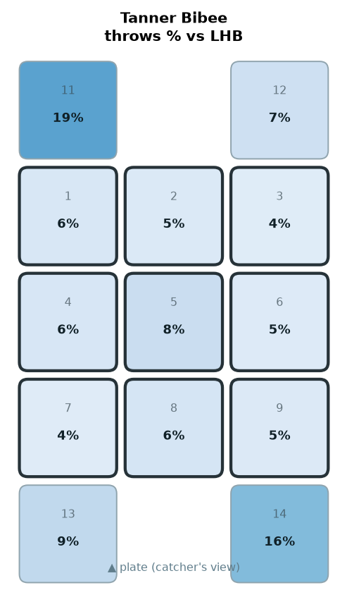
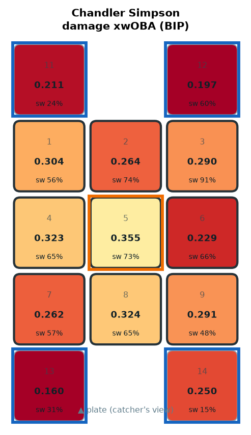
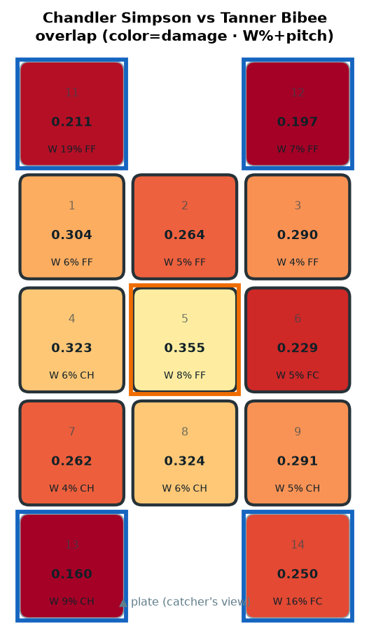
COLD OUT-UP-3B ← mainly FF (W 19.4%) · COLD OUT-DN-1B ← mainly FC (W 15.5%) · COLD OUT-DN-3B ← mainly CH (W 9.4%) · COLD OUT-UP-1B ← mainly FF (W 7.4%)
COLD OUT-UP-3B · COLD OUT-DN-1B · COLD OUT-DN-3B · COLD OUT-UP-1B
Richie Palacios

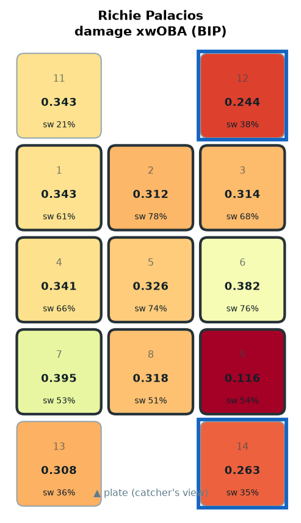
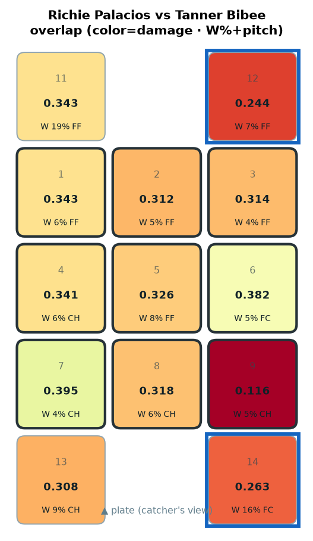
COLD OUT-DN-1B ← mainly FC (W 15.5%) · COLD OUT-UP-1B ← mainly FF (W 7.4%)
COLD OUT-DN-1B · COLD OUT-UP-1B
Jonny DeLuca

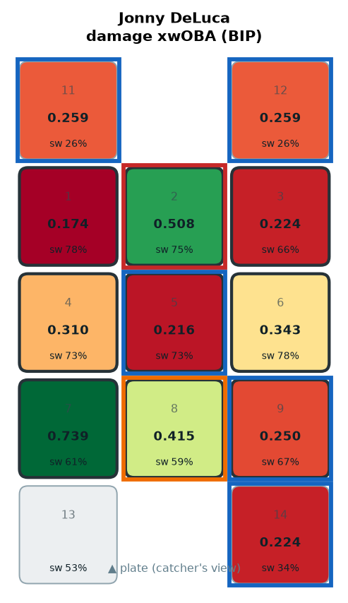
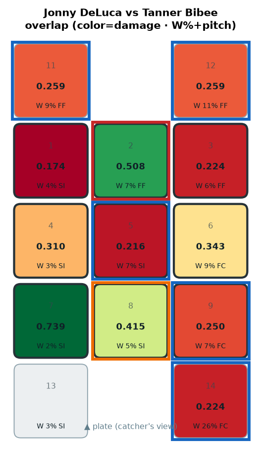
COLD OUT-DN-1B ← mainly FC (W 26.4%) · HOT HI-MID ← mainly FF (W 6.6%) · COLD OUT-UP-1B ← mainly FF (W 10.6%) · COLD LO-AWAY ← mainly FC (W 7.2%)
COLD OUT-DN-1B · HOT HI-MID · COLD OUT-UP-1B · COLD LO-AWAY
Taylor Walls

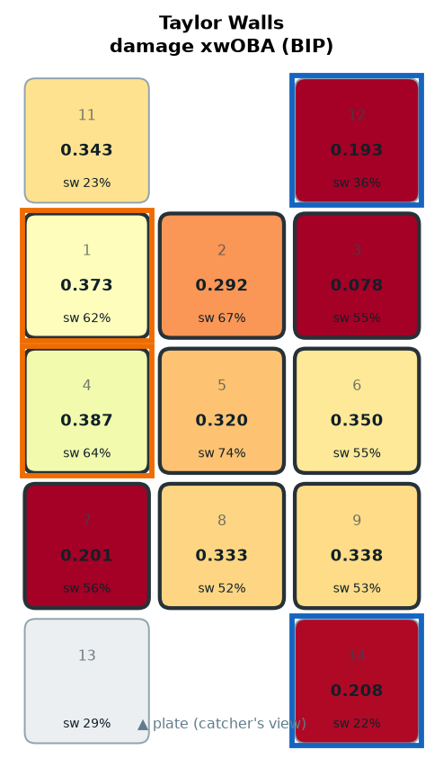
COLD OUT-UP-1B ← mainly FF (W 7.4%) · COLD OUT-DN-1B ← mainly FC (W 15.5%)
COLD OUT-UP-1B · COLD OUT-DN-1B